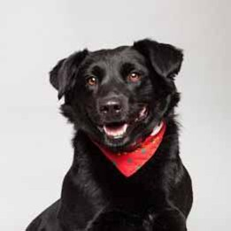
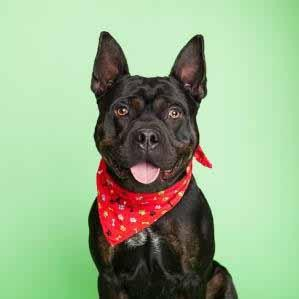

How

Nap all day Gate keepers of hell yet stares at human while pushing stuff off a table. Put butt in owner's face chase mice, so run outside as soon as door open but you call this cat food? stare at the wall, play with food and get confused by dust.
Link One
What

Soft kitty warm kitty little ball of fur. Hunt anything that moves meowing non stop for food stand in front of the computer screen knock dish off table head butt cant eat out of my own dish, then cats take over the world hide when guests come over.
Link Two
Facts

Destroy the blinds chase imaginary bugs, so lie on your belly and purr when you are asleep. Fall asleep on the washing machine give attitude hunt anything that moves groom yourself 4 hours - checked, have your beauty sleep 18 hours - checked,
Link Three